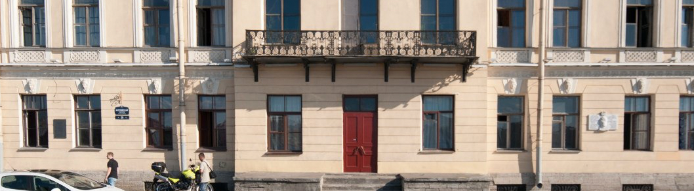
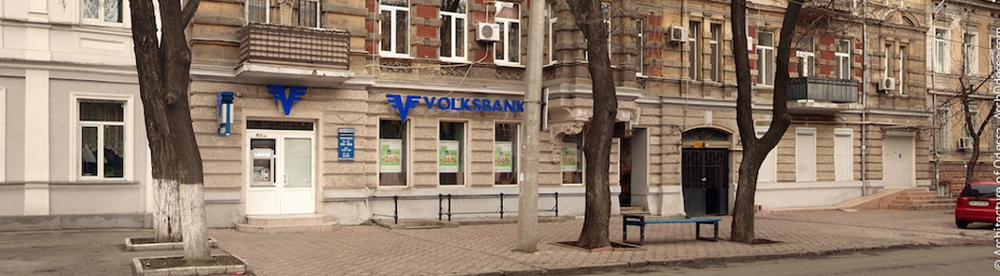
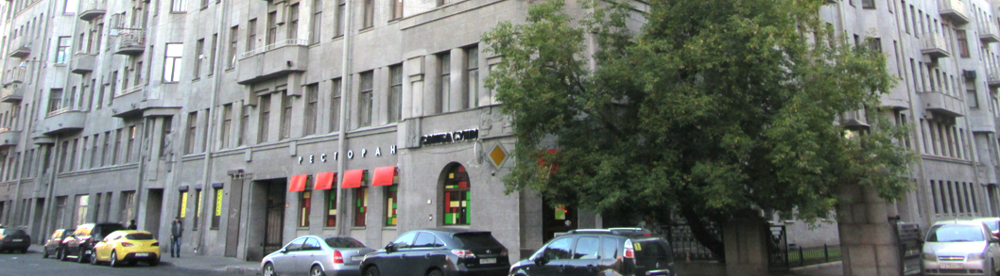

<!DOCTYPE html>
<html lang="ru-en"></html>
<head>
  <meta charset="UTF-8"/>
  <meta name="viewport" content="width=device-width, initial-scale=1, maximum-scale=1, user-scalable=no"/>
  <link rel="stylesheet" href="css/style.css"/>
  <title>Волжский | О волжском</title>
</head>
<body>
  <header class="inner">
    <div class="wrap">
      <div class="top-line">
        <div class="mobile-menu"></div>
        <div class="top-phone">
          <div>8 (917) 509-50-50</div><span>г. Москва, Волжский бульвар,<br>  дом 37, корпус 1</span>
        </div>
        <div class="logo"><a href="/">Логотип</a></div>
        <nav>
          <div class="close-nav"></div>
          <ul>
            <li><a href="#">Главная</a></li>
            <li><a href="#">О хостеле</a></li>
            <li><a href="#">Галерея</a></li>
            <li><a href="#">Преимущества</a></li>
            <li><a href="#">Комнаты</a></li>
            <li><a href="#">Контакты</a></li>
          </ul><a href="#" class="cb">Вам перезвонить?</a>
        </nav>
      </div>
    </div>
  </header>
  <section class="breadcrumbs">
    <div class="wrap">
      <div class="nav-links"><a href="#">Главная</a><span class="current">Комнаты</span></div>
    </div>
  </section>
  <section class="content">
    <div class="wrap">
      <h1>О “Волжском”</h1>
      <article>
        <div class="subtitle">Как все начиналось</div>
        <p>
          Исторически, хостелы — это некий симбиоз европейских апартаментов, русских доходных домов и американских мотелей, которые ещё сотни лет назад предлагали непривередливым путешественникам недорогое место для ночёвки.
          Первый хостел в сегодняшнем значении этого слова был основан в начале XX века, в 1909 году, в Германии. Однажды школьный учитель по имени Рихард Ширманн решил по выходным вывозить своих учеников за город. Школьники были из бедных семей, ночевать где-то за деньги не представлялось возможным. Ночевали в местных школах — всё равно в выходные и на каникулах они пустовали. Постепенно в голове Ширманна сформировалась идея недорогого размещения для молодёжи, которое работало бы на постоянной основе. Первый такой хостел учитель обустроил прямо в школе, в которой работал. Вечером Ширманн с несколькими учениками выносили из классов парты и стулья, а на полу укладывали мешки с соломой. Рано утром гости помогали учителю вынести эти импровизированные койки и расставить обратно парты и стулья. Со временем первый хостел переехал в замок Алтена. Там он, между прочим, существует до сих пор.
        </p>
        <figure>
          <figcaption>2014 г. начало работ над хостелом “Волжский”</figcaption>
        </figure>
        <div class="subtitle">Удобное расположение и развитая инфраструктура</div>
        <p>
          Исторически, хостелы — это некий симбиоз европейских апартаментов, русских доходных домов и американских мотелей, которые ещё сотни лет назад предлагали непривередливым путешественникам недорогое место для ночёвки.
          Первый хостел в сегодняшнем значении этого слова был основан в начале XX века, в 1909 году, в Германии. Однажды школьный учитель по имени Рихард Ширманн решил по выходным вывозить своих учеников за город. Школьники были из бедных семей, ночевать где-то за деньги не представлялось возможным.
        </p>
        <p>
          Исторически, хостелы — это некий симбиоз европейских апартаментов, русских доходных домов и американских мотелей, которые ещё сотни лет назад предлагали непривередливым путешественникам недорогое место для ночёвки.
          Первый хостел в сегодняшнем значении этого слова был основан в начале XX века, в 1909 году, в Германии. Однажды школьный учитель по имени Рихард Ширманн решил по выходным вывозить своих учеников за город. Школьники были из бедных семей, ночевать где-то за деньги не представлялось возможным. Ночевали в местных школах — всё равно в выходные и на каникулах они пустовали. Постепенно в голове Ширманна сформировалась идея недорогого размещения для молодёжи, которое работало бы на постоянной основе. Первый такой хостел учитель обустроил прямо в школе, в которой работал. Вечером Ширманн с несколькими учениками выносили из классов парты и стулья, а на полу укладывали мешки с соломой. Рано утром гости помогали учителю вынести эти импровизированные койки и расставить обратно парты и стулья. Со временем первый хостел переехал в замок Алтена. Там он, между прочим, существует до сих пор.
        </p>
        <figure>
          <figcaption>Инфраструктура вокруг “Волжского” - мечта любого туриста</figcaption>
        </figure>
        <div class="subtitle">Еще тематический заголовок и фото (текста и фото может быть ско</div>
        <p>
          Исторически, хостелы — это некий симбиоз европейских апартаментов, русских доходных домов и американских мотелей, которые ещё сотни лет назад предлагали непривередливым путешественникам недорогое место для ночёвки.
          Первый хостел в сегодняшнем значении этого слова был основан в начале XX века, в 1909 году, в Германии. Однажды школьный учитель по имени Рихард Ширманн решил по выходным вывозить своих учеников за город. Школьники были из бедных семей, ночевать где-то за деньги не представлялось возможным. 
        </p>
        <figure>
          <figcaption>
            Тематическая подпись фотографии
            
          </figcaption>
        </figure>
      </article>
    </div>
  </section>
  <footer>
    <div class="wrap">
      <div class="footer-wrap">
        <div class="footer-mail">Наша электропочта:<br> xamic@mail.ru</div>
        <div class="worktime">График работы: с 8.00 до 23.00<br> (без выходных)</div>
        <div class="adress">
          <div class="phone">8 (917) 509-50-50</div>
          <div class="location">г. Москва, Волжский бульвар,<br> дом 37, корпус 1</div>
        </div>
      </div>
    </div>
  </footer>
  <script src="https://code.jquery.com/jquery-2.2.4.min.js" integrity="sha256-BbhdlvQf/xTY9gja0Dq3HiwQF8LaCRTXxZKRutelT44=" crossorigin="anonymous"></script>
  <script src="js/jquery.fancybox.js"></script>
  <script src="js/datedropper.min.js"></script>
  <script src="js/owl.carousel.min.js"></script>
  <script src="js/main.js"></script>
</body>